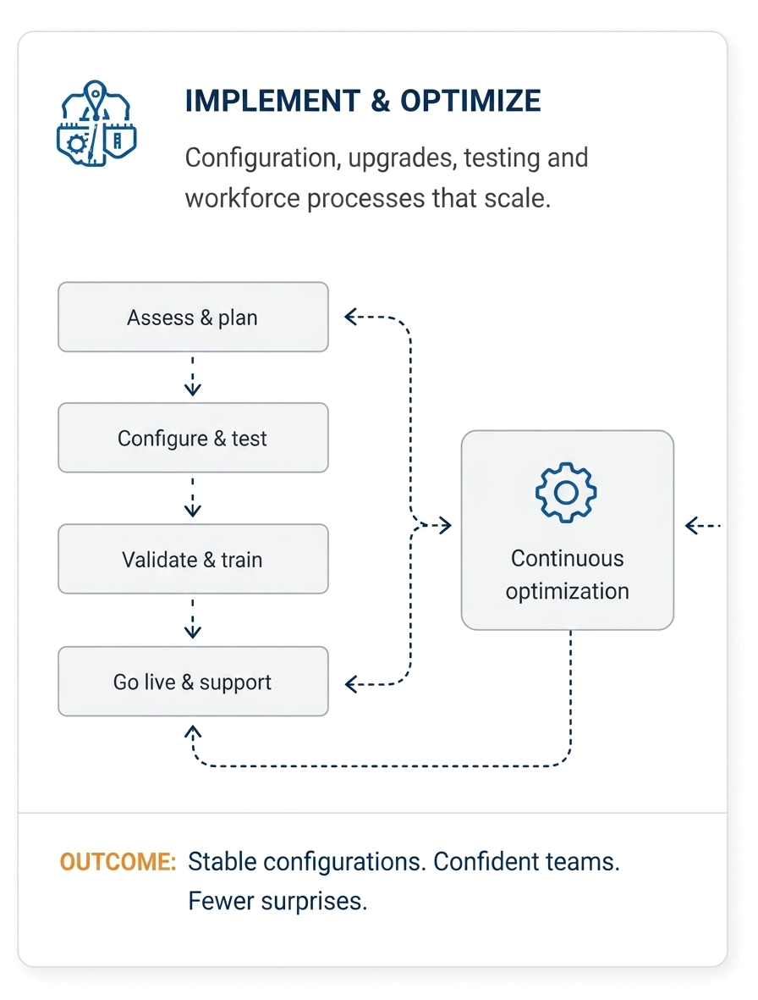
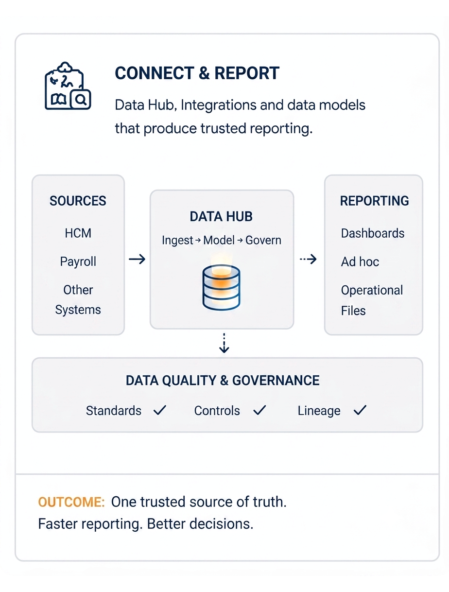
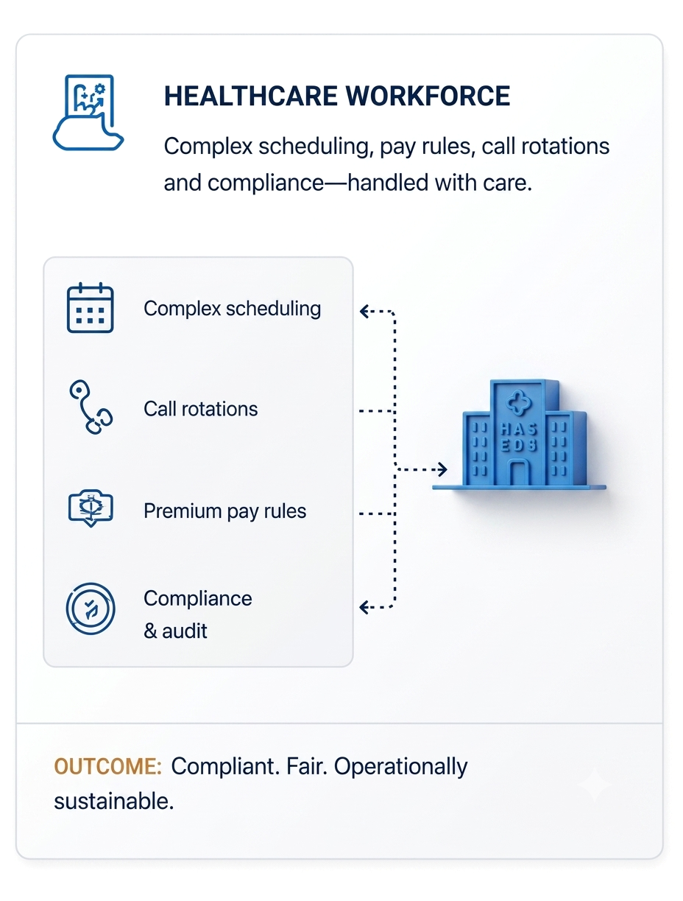
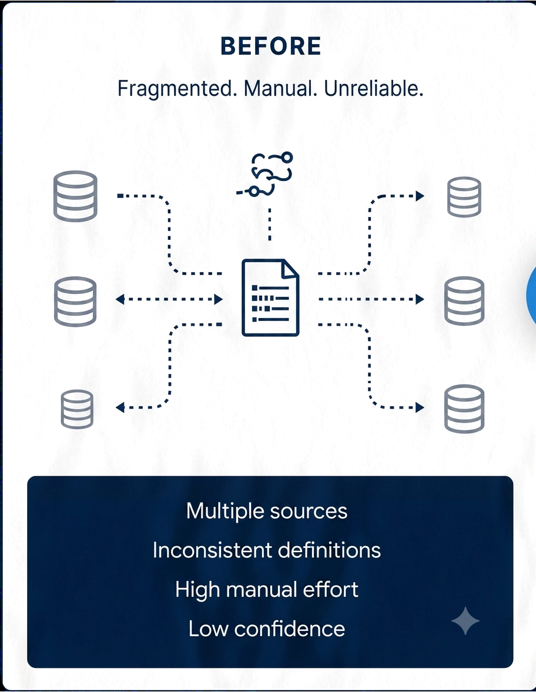
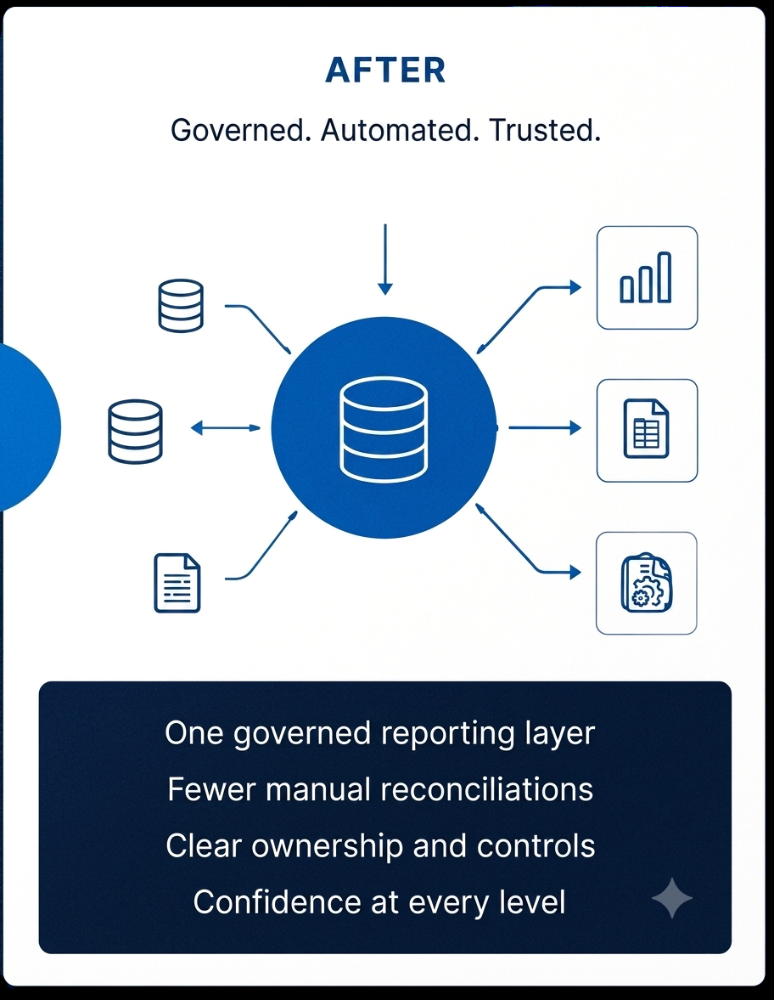

Make UKG work the way your organization does.
Senior UKG specialists helping complex workforce environments run reliably — from configuration and integrations to data, reporting and optimization.



When UKG gets complicated, we find what’s underneath.
How we work.
Understand your environment, challenges and goals.
Resolve issues, reduce risk and restore confidence.
Optimize processes, data and reporting.
Build capability, governance and a support model.
From inconsistent workforce data to reporting leaders could trust.
A large healthcare organization faced unreliable reports, high manual effort and inconsistent definitions across hospitals.
How we helped:- Consolidated data from 12+ sources into the UKG Data Hub
- Standardized definitions and reporting layer
- Automated key reconciliations and quality checks
- Enabled self-service reporting with governed metrics


Complex UKG work needs people who understand both the platform and the operation.
Delivering data and workforce solutions for enterprises across Canada and North America.
Experienced consultants who lead the work and stay engaged from start to finish.
Supporting organizations across Canada and the United States.
Deep understanding of healthcare workforce complexity, compliance and pay.
Bring us the UKG problem your team cannot untangle.
We’ll help you find the root cause, fix it for good and make UKG work the way your organization does.